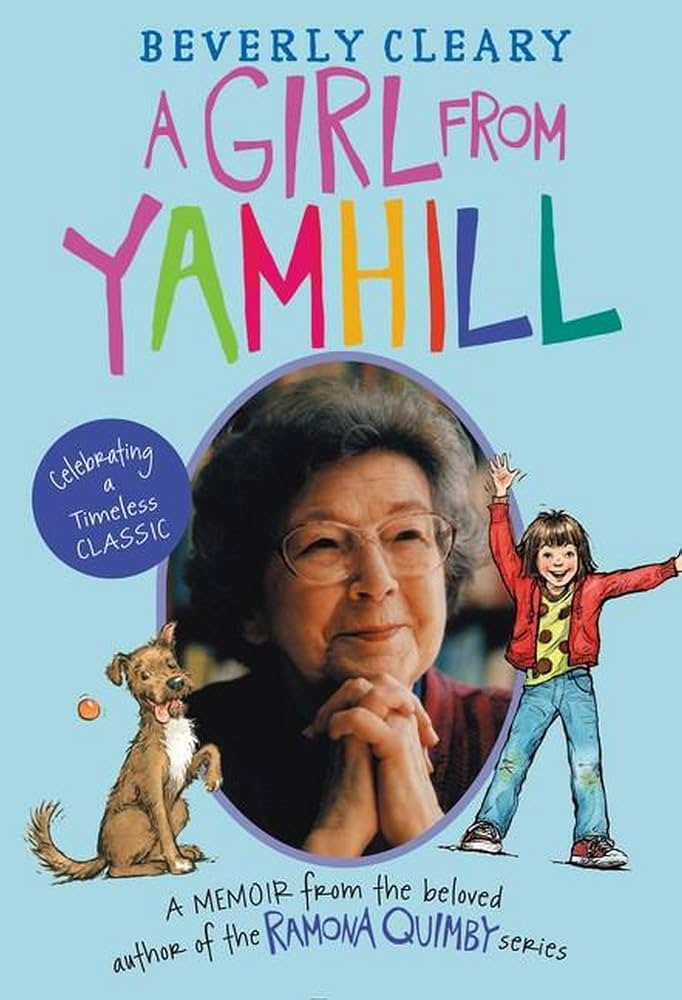

Beverly Cleary, A Girl from Yamhill (1988)
Content warning:
Animal cruelty, child abuse, death (including of animals), hospitalization, pregnancy loss, sexual assault, suicide
Synopsis
The first of two volumes of renowned children’s author Beverly Cleary’s memoirs tells the story of Cleary’s childhood in Oregon, from her birth to her leaving the state at age eighteen. In her earliest years, the family lived on a farm in Yamhill. When Cleary was six, they lost the farm and moved to Portland for job opportunities. The shift between the rural and urban environments is a turning point in the memoir—“Yamhill” and “Portland” are its two formal divisions (In between lie a series of black-and-white family photos). Cleary recounts her journey through school and to becoming a reader and writer.
Essay
When I ask someone who grew up in Oregon what they think of as “Oregon literature”—which I’ve done quite a lot as I prepared and taught the Oregon literature class—Beverly Cleary’s name is the one that comes up most often. Most people read the Ramona books, or perhaps some of Cleary’s other famous titles, as children. I did as well, growing up in Indiana. With little knowledge of Oregon, I never recognized the Ramona books’ setting as Portland, but it seems that most Oregonians know her as one of Oregon’s own. Cleary’s memoir of her own childhood provides insight into the neighborhoods that inspired her famous fiction.
In other entries in this guide, you’ll notice a lot of references to a master narrative that Oregon literature deals with the Oregon Trail. Early on in A Girl from Yamhill, Cleary details the history of her “pioneer ancestors,” whom her parents often invoked as a matter of discipline—“Life had not been easy for them; we should not expect life to be easy for us” (9). Stories of settler ancestors who carved out a living in the Willamette Valley (on one side, with the help of “Indians,” on the other, in fear of them) obviously shape Cleary’s family’s relationship to their farm, and eventually, their sadness at leaving it behind.
Cleary describes her early years as exploring freely, getting dirty—there were rules, but few were enforced. She notes that her father “was the only one of the five sons interested in farming,” and though he is attached to the rural lifestyle, it quickly becomes financially unsustainable for the family (23). They lease the farm (and later sell it), auction off their livestock, and move to Portland. “Leaving Yamhill did not distress me,” Cleary reflects, “Yamhill had taught me that the world was a safe and beautiful place, where children were treated with kindness, patience, and tolerance” (71).
Cleary introduces Portland as immediately large and bustling: “Portland, city of regular paychecks, concrete sidewalks instead of boardwalks, parks with lawns and flower beds, streetcars instead of a hack from the livery stable, a library with a children’s room that seemed as big as a Masonic hall, buildings so high a six-year-old almost fell over backward looking at the tops” (91). Childhood means something entirely different in Portland, where there are so many more children, so much more of everything. “From a country child who had never known fear, I became a city child consumed by fear,” Cleary writes (103). A classmate makes fun of her for naming her doll “Fordson-Lafayette”—“Nobody named a doll after a tractor” (Ramona Quimby, in a nod to this, names a doll “Chevrolet”) (103). Though the family’s transition to urban life is a bit rough, especially for Cleary’s father, who misses working outdoors, Cleary eventually interacts with a rich cast of city characters, from classmates to neighborhood friends to a generally awful boyfriend who dislikes Oregon.
Cleary’s relationship to school, which tends to prioritize order over imagination, is often tortured. She notes that though her mother exposed her to books from a young age, she was a reluctant reader. This, too, is a major arc of the memoir, how slowly this literary icon came to love literature at all. At the end of this volume, Cleary leaves Oregon to attend college in California (Then as now, Oregon lagged in higher education funding—Cleary’s mother repeatedly says “If only Oregon would do something to help its young people”) (332). Though Cleary did not return to live in Oregon, the imprints of an Oregon childhood, both rural and urban, mark her vast body of work.
Author Bio
Beverly Cleary (1916-2021) was born in McMinnville and lived on a family farm in nearby Yamhill until the age of six, when the family, as she chronicles in A Girl from Yamhill, moved to Portland. She attended college in California and briefly worked as a librarian in Yakima, Washington and at a U.S. Army camp in Oakland, California. In the late 1940s, Cleary and her husband settled in Carmel, California, where she remained for the rest of her life. Inspired in part by her time as a children’s librarian, Cleary became a full-time children’s writer. She wrote more than forty books. Her first book was Henry Huggins, which kicked off a six-book series (published between 1950 and 1964), and her iconic Ramona series, with eight books (published between 1955 and 1999) grew out of it. Both series are set around Klickitat Street in Portland, where Cleary grew up. Beyond these two series, Cleary wrote several standalone novels, including Dear Mr. Henshaw (1983), which won the Newbery Medal. Cleary died in Carmel, but is buried in Yamhill.
Further Reading
Beverly Cleary, Henry and Beezus (1952)
Beverly Cleary, Ramona Quimby, Age 8 (1981)
Beverly Cleary, My Own Two Feet (1995)
- Second volume of Cleary’s memoirs
